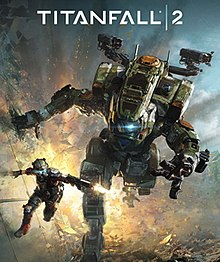

| Hidden Gem Games | |
|---|---|
| Haunting Ground | |
| The game follows the story of Fiona Belli, a young woman who wakes up in a mysterious castle with no memory of how she got there.The game's atmospheric and eerie setting, along with its unsettling characters, create a sense of constant tension and dread. The game's puzzles are challenging and often require careful exploration and observation to solve. |
|
| Half-Life 2: Episode Two | |
The game continues the story of Gordon Freeman, a physicist who must battle an alien race called the Combine to save humanity. In "Episode Two," Gordon is accompanied by Alyx Vance, a skilled hacker and fighter, as they journey through the dangerous wilderness outside of the city.The game features intense combat and puzzles, as well as improved graphics and physics compared to the previous games in the series. |
|
| Silent Hill 4:The Room | |
The game follows the story of Henry Townshend, a man who wakes up trapped in his apartment and unable to leave.As the game progresses, the storyline unfolds, revealing a dark and twisted plot that delves into themes of abuse, trauma, and the nature of reality. The game's haunting atmosphere, sound design, and disturbing imagery create a terrifying and immersive experience for players. |
|
| Rule of Rose | |
The game is set in England in the 1930s and follows the story of a young girl named Jennifer, who finds herself trapped in a world of terror and abuse.Features a unique gameplay style that combines survival horror elements with exploration, puzzle-solving, and combat. The game's haunting visuals and atmospheric soundtrack create a chilling and unsettling experience for players. |
|
|  | Titanfall 2 |
The game's single-player campaign follows the story of Jack Cooper, a soldier who becomes a pilot after his mentor is killed in action. The campaign features a variety of intense and challenging missions that combine platforming, puzzle-solving, and combat. |
|